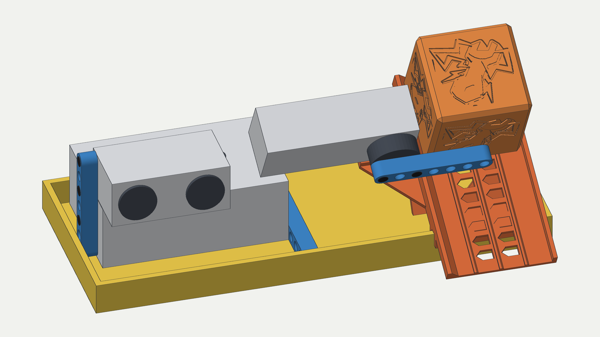
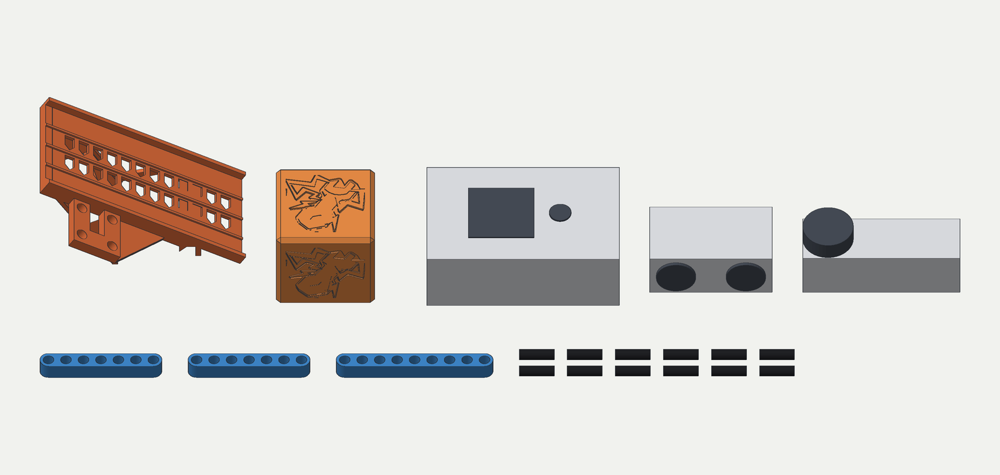
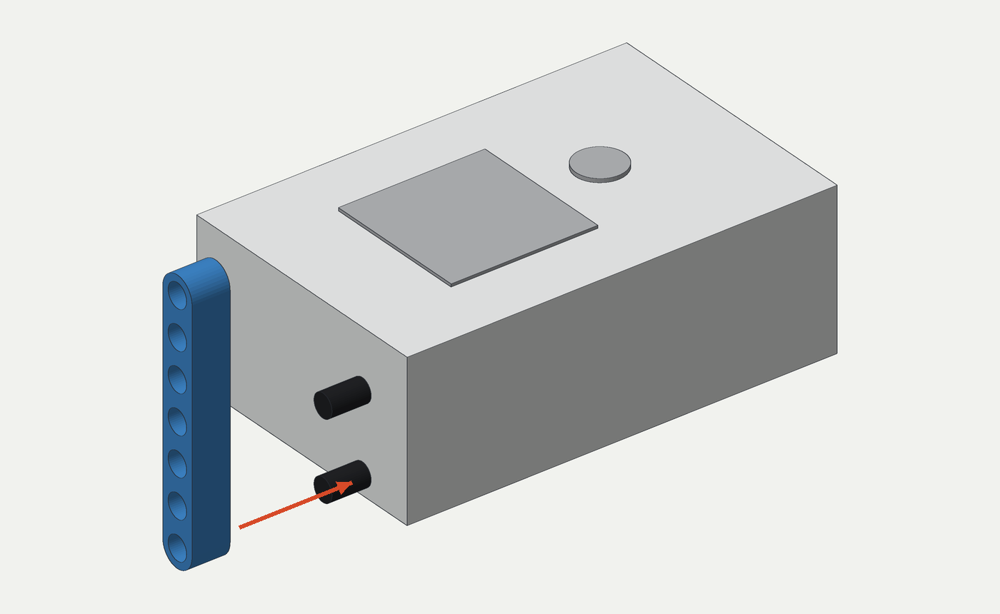
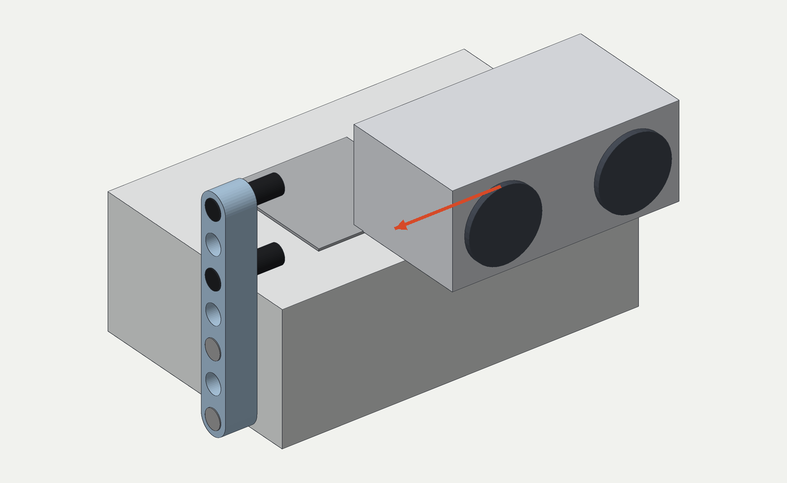
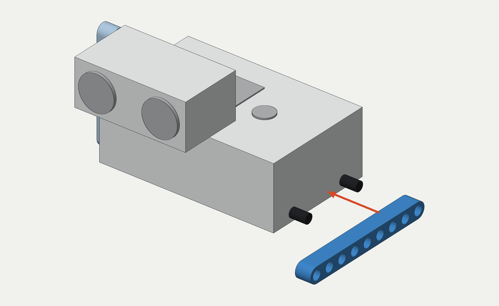
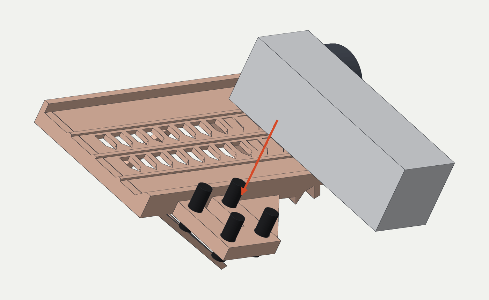
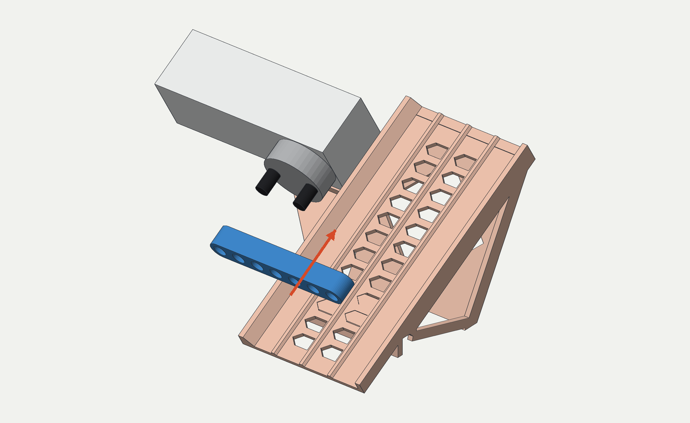
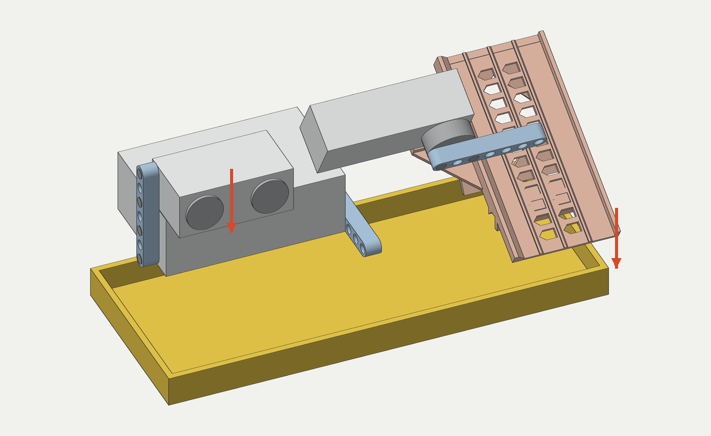
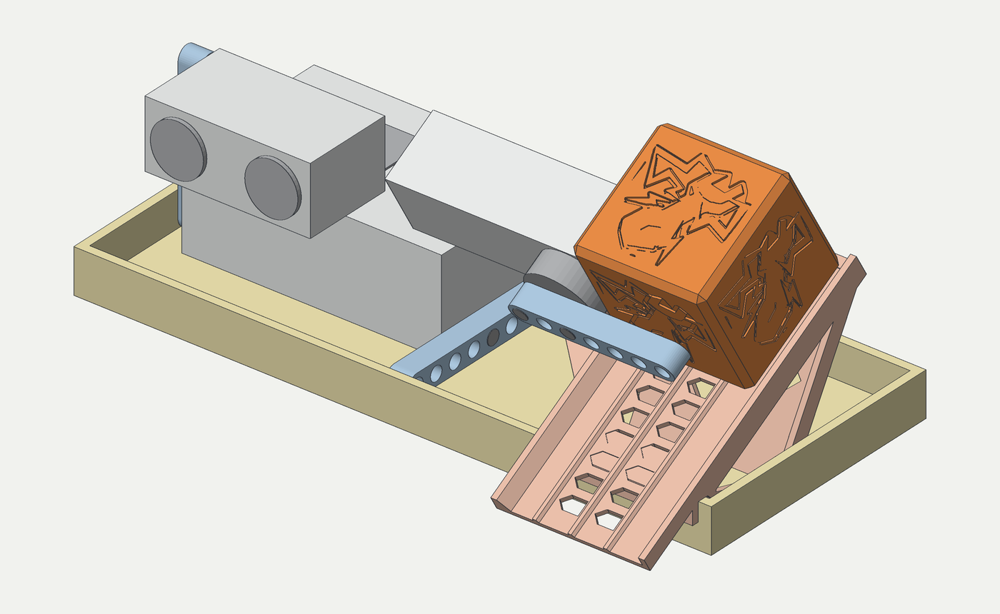
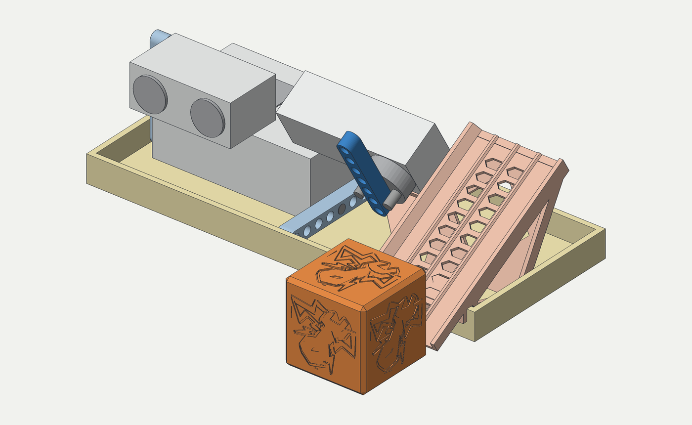

<title>Montagem do Dispositivo Maker</title>
<meta name="claude:viewport-fit-sides" content="cover">
<link rel="preconnect" href="https://fonts.googleapis.com">
<link rel="preconnect" href="https://fonts.gstatic.com" crossorigin>
<link rel="stylesheet" href="https://fonts.googleapis.com/css2?family=Barlow+Condensed:wght@600;700&family=IBM+Plex+Mono:wght@400;500&family=IBM+Plex+Sans:wght@400;500;600&display=swap">
<style>
  /* Layout: folha de instruções técnica. Coluna de 1080px; cada passo é uma prancha
     com a figura do modelo à esquerda e as instruções à direita (empilha no celular).
     As cores das peças são as mesmas das figuras: laranja impresso, azul LEGO, preto pino. */
  :root {
    --paper: #f1f2ee;
    --card: #fbfbf8;
    --ink: #1e2227;
    --muted: #5b626a;
    --line: #d5d7cf;
    --orange: #c9582a;
    --blue: #2c72b8;
    --pin: #232427;
    --grey: #b9bdc3;
    --ok-bg: #e6eee2;
    --ok-ink: #2f5a2a;
    --warn-bg: #f6e7da;
    --warn-ink: #7a3a17;
    --display: "Barlow Condensed", "Arial Narrow", "Helvetica Neue", sans-serif;
    --body: "IBM Plex Sans", "Segoe UI", system-ui, sans-serif;
    --mono: "IBM Plex Mono", ui-monospace, "SF Mono", Menlo, monospace;
  }
  @media (prefers-color-scheme: dark) {
    :root:not([data-theme="light"]) {
      --paper: #16181b; --card: #1e2125; --ink: #eceee9; --muted: #a2a8ae; --line: #30343a;
      --orange: #ee8a55; --blue: #6aa6e6; --pin: #d9dbde; --grey: #8b9097;
      --ok-bg: #1f2b1e; --ok-ink: #a9d39f; --warn-bg: #2e2219; --warn-ink: #f1b78f;
      color-scheme: dark;
    }
  }
  :root[data-theme="dark"] {
    --paper: #16181b; --card: #1e2125; --ink: #eceee9; --muted: #a2a8ae; --line: #30343a;
    --orange: #ee8a55; --blue: #6aa6e6; --pin: #d9dbde; --grey: #8b9097;
    --ok-bg: #1f2b1e; --ok-ink: #a9d39f; --warn-bg: #2e2219; --warn-ink: #f1b78f;
    color-scheme: dark;
  }

  * { box-sizing: border-box; }
  body {
    background: var(--paper);
    color: var(--ink);
    font: 400 16px/1.6 var(--body);
    padding-left: max(16px, env(safe-area-inset-left, 0px));
    padding-right: max(16px, env(safe-area-inset-right, 0px));
    padding-block: 32px 64px;
  }
  .folha { max-width: 1080px; margin: 0 auto; display: grid; gap: 56px; }

  h1, h2, h3 { font-family: var(--display); font-weight: 700; line-height: 1.05; text-wrap: balance; margin: 0; }
  h1 { font-size: clamp(2.6rem, 7vw, 4.4rem); letter-spacing: -0.01em; }
  h2 { font-size: clamp(1.8rem, 4vw, 2.4rem); }
  h3 { font-size: 1.55rem; }
  p { margin: 0; max-width: 65ch; }
  .rotulo { font: 500 0.78rem/1.2 var(--mono); letter-spacing: 0.08em; text-transform: uppercase; color: var(--muted); }
  code, .mono { font-family: var(--mono); font-size: 0.9em; }

  /* Capa */
  .capa { display: grid; gap: 20px; }
  .capa .intro { display: grid; gap: 12px; }
  .capa .intro p { font-size: 1.08rem; }
  .ficha { display: flex; flex-wrap: wrap; gap: 8px 28px; padding-top: 8px; }
  .ficha div { display: grid; gap: 2px; }
  .ficha b { font: 700 1.7rem/1 var(--display); font-variant-numeric: tabular-nums; }
  figure { margin: 0; }
  .prancha {
    background: #f1f2ee;
    border: 1px solid var(--line);
    border-radius: 10px;
    overflow: hidden;
  }
  .prancha img { display: block; width: 100%; height: auto; }
  figcaption { font-size: 0.88rem; color: var(--muted); padding-top: 8px; }

  /* Orientação */
  .rosa { display: grid; grid-template-columns: minmax(0, 1fr) minmax(0, 1.1fr); gap: 28px; align-items: center; }
  .rosa svg { width: 100%; max-width: 440px; height: auto; display: block; }
  .s-borda { fill: none; stroke: var(--ink); stroke-width: 3; }
  .s-hub { fill: var(--grey); opacity: 0.6; }
  .s-rampa { fill: var(--orange); }
  .s-peq { font: 500 13px var(--mono); fill: var(--ink); }
  .s-claro { fill: var(--card); }
  .s-lado { font: 700 19px var(--display); fill: var(--ink); letter-spacing: 0.04em; }
  .s-sul { fill: var(--orange); }
  .rosa ul { margin: 0; padding-left: 1.1em; display: grid; gap: 6px; }

  /* Peças */
  .pecas { display: grid; gap: 20px; }
  .tabela { overflow-x: auto; }
  table { border-collapse: collapse; width: 100%; font-size: 0.95rem; }
  th, td { text-align: left; padding: 9px 12px 9px 0; border-bottom: 1px solid var(--line); vertical-align: top; }
  th { font: 500 0.75rem/1.2 var(--mono); letter-spacing: 0.08em; text-transform: uppercase; color: var(--muted); }
  td.qt { font: 600 1rem/1.4 var(--mono); font-variant-numeric: tabular-nums; white-space: nowrap; }
  .ponto { display: inline-block; width: 0.7em; height: 0.7em; border-radius: 2px; margin-right: 8px; vertical-align: 0.02em; }
  .p-imp { background: var(--orange); }
  .p-viga { background: var(--blue); }
  .p-pino { background: var(--pin); }
  .p-ele { background: var(--grey); }

  /* Passos */
  .passos { display: grid; gap: 48px; counter-reset: passo; }
  .passo {
    display: grid;
    grid-template-columns: minmax(0, 1.35fr) minmax(0, 1fr);
    gap: 28px;
    align-items: start;
    padding-top: 28px;
    border-top: 2px solid var(--ink);
  }
  .passo .texto { display: grid; gap: 14px; min-width: 0; }
  .num { font: 700 3.4rem/0.85 var(--display); color: var(--orange); font-variant-numeric: tabular-nums; }
  .cabeca { display: flex; gap: 16px; align-items: flex-end; }
  .chips { display: flex; flex-wrap: wrap; gap: 6px; }
  .chip {
    font: 500 0.8rem/1 var(--mono);
    border: 1px solid var(--line);
    background: var(--card);
    border-radius: 999px;
    padding: 6px 10px;
    display: inline-flex; align-items: center;
  }
  .chip .ponto { margin-right: 6px; }
  ol.acoes { margin: 0; padding-left: 1.3em; display: grid; gap: 8px; }
  ol.acoes li::marker { font-family: var(--mono); color: var(--muted); }
  .confira, .atencao { border-radius: 8px; padding: 12px 14px; font-size: 0.95rem; display: grid; gap: 4px; }
  .confira { background: var(--ok-bg); color: var(--ok-ink); }
  .atencao { background: var(--warn-bg); color: var(--warn-ink); }
  .confira b, .atencao b { font: 500 0.75rem/1.2 var(--mono); letter-spacing: 0.08em; text-transform: uppercase; }
  .feito { display: inline-flex; gap: 10px; align-items: center; font-weight: 500; cursor: pointer; user-select: none; width: fit-content; }
  .feito input { width: 20px; height: 20px; accent-color: var(--orange); cursor: pointer; }
  .feito input:focus-visible { outline: 2px solid var(--blue); outline-offset: 2px; }
  .passo.ok .num { color: var(--ok-ink); }
  .progresso { font: 500 0.85rem/1.2 var(--mono); color: var(--muted); }

  /* Teste e problemas */
  .dupla { display: grid; grid-template-columns: minmax(0, 1fr) minmax(0, 1fr); gap: 36px; }
  .bloco-texto { display: grid; gap: 14px; align-content: start; min-width: 0; }
  dl { margin: 0; display: grid; gap: 14px; }
  dt { font-weight: 600; }
  dd { margin: 2px 0 0; color: var(--muted); max-width: 65ch; }
  .limites { background: var(--card); border: 1px solid var(--line); border-radius: 10px; padding: 18px 20px; display: grid; gap: 12px; }
  .limites ul { margin: 0; padding-left: 1.1em; display: grid; gap: 6px; }
  footer { border-top: 1px solid var(--line); padding-top: 18px; font-size: 0.88rem; color: var(--muted); display: grid; gap: 6px; }

  @media (max-width: 760px) {
    .passo, .rosa, .dupla { grid-template-columns: minmax(0, 1fr); }
    .num { font-size: 2.8rem; }
  }
</style>

<main class="folha">

  <header class="capa">
    <div class="intro">
      <span class="rotulo">CoopBot · TBR 2026 Middle 2 · Missão 8</span>
      <h1>Montagem do Dispositivo Maker</h1>
      <p>O dispositivo fica sobre a bandeja amarela. Quando o sensor vê um trabalhador na Área Industrial, o motor levanta a trava, e o Bloco Overclock desce a rampa até o tapete. Só a rampa e o Bloco são impressos. O resto é do kit SPIKE Prime, preso com pinos, sem cola.</p>
    </div>
    <figure>
      <div class="prancha"></div>
      <figcaption>Montado e carregado: a trava fechada segura o Bloco no alto da rampa.</figcaption>
    </figure>
    <div class="ficha">
      <div><span class="rotulo">Impressas</span><b>2</b></div>
      <div><span class="rotulo">Vigas LEGO</span><b>3</b></div>
      <div><span class="rotulo">Pinos</span><b>12</b></div>
      <div><span class="rotulo">Passos</span><b>7</b></div>
      <div><span class="rotulo">Cola</span><b>nenhuma</b></div>
    </div>
  </header>

  <section class="rosa" aria-labelledby="t-lados">
    <svg viewBox="0 0 440 260" role="img" aria-label="Bandeja vista de cima, com a parede sul virada para você: oeste à esquerda, leste à direita, norte ao fundo.">
      <rect class="s-borda" x="40" y="44" width="360" height="160" rx="4"/>
      <rect class="s-hub" x="52" y="56" width="150" height="100" rx="3"/>
      <text class="s-peq" x="127" y="111" text-anchor="middle">hub + sensor</text>
      <rect class="s-rampa" x="306" y="56" width="82" height="136" rx="3"/>
      <text class="s-peq s-claro" x="347" y="128" text-anchor="middle">rampa</text>
      <text class="s-lado" x="220" y="30" text-anchor="middle">NORTE · fundo</text>
      <text class="s-lado s-sul" x="220" y="240" text-anchor="middle">SUL · você · Área Industrial</text>
      <text class="s-lado" x="22" y="124" text-anchor="middle" transform="rotate(-90 22 124)">OESTE</text>
      <text class="s-lado" x="418" y="124" text-anchor="middle" transform="rotate(90 418 124)">LESTE</text>
    </svg>
    <div class="bloco-texto">
      <span class="rotulo">Antes de começar</span>
      <h2 id="t-lados">Lados da bandeja</h2>
      <p>Ponha a bandeja na sua frente com a <b>parede sul</b>, a que dá para a Área Industrial, virada para você. O manual usa os lados assim:</p>
      <ul>
        <li><b>oeste</b> é a sua esquerda, onde fica o hub;</li>
        <li><b>leste</b> é a sua direita, onde fica a rampa;</li>
        <li><b>norte</b> é o fundo, e <b>sul</b> é a frente.</li>
      </ul>
      <p>Os furos de cada viga são contados <b>a partir da ponta de baixo</b>, ou da ponta do fundo quando a viga está deitada.</p>
    </div>
  </section>

  <section class="pecas" aria-labelledby="t-pecas">
    <div class="bloco-texto">
      <span class="rotulo">Separe tudo</span>
      <h2 id="t-pecas">Peças</h2>
    </div>
    <figure>
      <div class="prancha"></div>
      <figcaption>Da esquerda para a direita: rampa, Bloco, hub, sensor e motor. Na frente: as vigas 7M, 7M e 9M e os 12 pinos.</figcaption>
    </figure>
    <div class="tabela">
      <table>
        <thead><tr><th>Qt.</th><th>Peça</th><th>Onde vai</th></tr></thead>
        <tbody>
          <tr><td class="qt">1</td><td><span class="ponto p-imp"></span>Rampa, impressa (<code>maker_rampa.3mf</code>)</td><td>Ponta direita da bandeja, por cima da parede da frente</td></tr>
          <tr><td class="qt">1</td><td><span class="ponto p-imp"></span>Bloco Overclock, impresso</td><td>Na rampa, de boca para baixo</td></tr>
          <tr><td class="qt">1</td><td><span class="ponto p-ele"></span>Hub SPIKE Prime (o 2º hub)</td><td>Deitado no fundo da bandeja, tela para cima</td></tr>
          <tr><td class="qt">1</td><td><span class="ponto p-ele"></span>Sensor de distância (ultrassônico)</td><td>Por cima do hub, olhando para a frente</td></tr>
          <tr><td class="qt">1</td><td><span class="ponto p-ele"></span>Motor médio</td><td>Deitado na prateleira da rampa</td></tr>
          <tr><td class="qt">2</td><td><span class="ponto p-viga"></span>Viga 7M (reta, 7 furos)</td><td>Uma segura o sensor; a outra é a trava</td></tr>
          <tr><td class="qt">1</td><td><span class="ponto p-viga"></span>Viga 9M (reta, 9 furos)</td><td>Encosto do hub</td></tr>
          <tr><td class="qt">12</td><td><span class="ponto p-pino"></span>Pino com atrito, 2 módulos (preto)</td><td>2 por ligação, e 4 no motor</td></tr>
          <tr><td class="qt">2</td><td><span class="ponto p-ele"></span>Cabos do sensor e do motor</td><td>Já vêm presos nas peças</td></tr>
        </tbody>
      </table>
    </div>
    <div class="atencao">
      <b>Antes de montar</b>
      Tire os fiapos de PLA das janelas da rampa e dos 4 furos da prateleira. Enfie um pino em cada furo: ele deve entrar com a mão, firme, sem precisar de alicate.
    </div>
  </section>

  <section class="passos" aria-labelledby="t-passos">
    <div class="bloco-texto">
      <span class="rotulo">Montagem</span>
      <h2 id="t-passos">Passo a passo</h2>
      <p>Os passos 1 a 3 montam o hub. Os passos 4 e 5 montam a rampa. No 6 tudo vai para a bandeja. Nas figuras, as peças novas aparecem em cor, as já montadas aparecem apagadas, e a seta mostra o sentido do encaixe.</p>
      <span class="progresso" id="progresso" aria-live="polite">0 de 7 passos feitos</span>
    </div>

    <article class="passo" id="passo-1">
      <figure><div class="prancha"></div></figure>
      <div class="texto">
        <div class="cabeca"><span class="num">1</span><h3>Viga do sensor no hub</h3></div>
        <div class="chips"><span class="chip"><span class="ponto p-ele"></span>hub</span><span class="chip"><span class="ponto p-viga"></span>viga 7M</span><span class="chip"><span class="ponto p-pino"></span>2 pinos</span></div>
        <ol class="acoes">
          <li>Deite o hub com a tela para cima. Ele vai ficar com as laterais compridas na frente e no fundo.</li>
          <li>Na ponta <b>esquerda</b> do hub há duas colunas de 3 furos. Na coluna <b>da frente</b>, ponha um pino no furo de baixo e outro no de cima.</li>
          <li>Encaixe a viga 7M <b>em pé</b> nesses pinos, pelos <b>furos 1 e 3</b>.</li>
        </ol>
        <div class="confira"><b>Confira</b>A ponta de baixo da viga fica rente ao fundo do hub, e a viga sobe acima da tela.</div>
        <div class="atencao"><b>Portas</b>As portas do hub ficam nas laterais compridas. Na bandeja, a lateral do fundo fica a 1 mm da parede, então só as 3 portas da <b>frente</b> ficam livres. Monte com essas portas viradas para você.</div>
        <label class="feito"><input type="checkbox" id="feito-1" data-passo="1">Feito</label>
      </div>
    </article>

    <article class="passo" id="passo-2">
      <figure><div class="prancha"></div></figure>
      <div class="texto">
        <div class="cabeca"><span class="num">2</span><h3>Sensor na viga</h3></div>
        <div class="chips"><span class="chip"><span class="ponto p-ele"></span>sensor</span><span class="chip"><span class="ponto p-pino"></span>2 pinos</span></div>
        <ol class="acoes">
          <li>Ponha um pino nos <b>furos 5 e 7</b> da viga, saindo para a direita, por cima do hub.</li>
          <li>Apoie o sensor sobre o hub com os <b>dois olhos lado a lado, virados para você</b>.</li>
          <li>Empurre o sensor para a esquerda até a ponta dele entrar nos pinos.</li>
        </ol>
        <div class="confira"><b>Confira</b>O sensor fica quase encostado na tela, com 0,4 mm de folga, e os olhos ficam a 47 mm do tapete.</div>
        <label class="feito"><input type="checkbox" id="feito-2" data-passo="2">Feito</label>
      </div>
    </article>

    <article class="passo" id="passo-3">
      <figure><div class="prancha"></div></figure>
      <div class="texto">
        <div class="cabeca"><span class="num">3</span><h3>Encosto do hub</h3></div>
        <div class="chips"><span class="chip"><span class="ponto p-viga"></span>viga 9M</span><span class="chip"><span class="ponto p-pino"></span>2 pinos</span></div>
        <ol class="acoes">
          <li>Na ponta <b>direita</b> do hub, ponha um pino no furo de baixo de cada coluna, ou seja, nos dois furos mais baixos.</li>
          <li>Encaixe a viga 9M <b>deitada</b>, com o <b>furo 1 no pino do fundo</b> e o <b>furo 5 no pino da frente</b>.</li>
          <li>O resto da viga sai para a frente do hub.</li>
        </ol>
        <div class="confira"><b>Confira</b>A ponta da viga fica a uns 4 mm da parede da frente. É ela que impede o hub de andar para a frente.</div>
        <label class="feito"><input type="checkbox" id="feito-3" data-passo="3">Feito</label>
      </div>
    </article>

    <article class="passo" id="passo-4">
      <figure><div class="prancha"></div></figure>
      <div class="texto">
        <div class="cabeca"><span class="num">4</span><h3>Motor na prateleira</h3></div>
        <div class="chips"><span class="chip"><span class="ponto p-imp"></span>rampa</span><span class="chip"><span class="ponto p-ele"></span>motor</span><span class="chip"><span class="ponto p-pino"></span>4 pinos</span></div>
        <ol class="acoes">
          <li>Ponha os 4 pinos nos furos da prateleira, que é a plataforma ao lado esquerdo da rampa.</li>
          <li>Deite o motor sobre os pinos, com uma das <b>faces largas</b> para baixo. Os furos que entram são os dois de cada lado do eixo, a 4 e a 20 mm do fundo do motor.</li>
          <li>O <b>disco</b> fica virado para a ponta baixa da rampa, e o <b>cabo</b> para a esquerda.</li>
        </ol>
        <div class="confira"><b>Confira</b>A ponta curta do motor quase encosta no trilho esquerdo, e o corpo fica paralelo à placa.</div>
        <label class="feito"><input type="checkbox" id="feito-4" data-passo="4">Feito</label>
      </div>
    </article>

    <article class="passo" id="passo-5">
      <figure><div class="prancha"></div></figure>
      <div class="texto">
        <div class="cabeca"><span class="num">5</span><h3>Trava no disco</h3></div>
        <div class="chips"><span class="chip"><span class="ponto p-viga"></span>viga 7M</span><span class="chip"><span class="ponto p-pino"></span>2 pinos</span></div>
        <ol class="acoes">
          <li>Gire o disco do motor com a mão até os <b>dois furos de pino</b> dele ficarem lado a lado, paralelos à placa.</li>
          <li>Ponha um pino em cada um desses furos.</li>
          <li>Encaixe a viga 7M pelos <b>furos 1 e 3</b>, contando a partir da ponta esquerda. O furo 2 fica sobre o eixo, e o resto da viga atravessa o canal para a direita.</li>
        </ol>
        <div class="confira"><b>Confira</b>Fechada, a viga passa 8 mm acima da placa, por cima dos dois trilhos, sem encostar neles.</div>
        <label class="feito"><input type="checkbox" id="feito-5" data-passo="5">Feito</label>
      </div>
    </article>

    <article class="passo" id="passo-6">
      <figure><div class="prancha"></div></figure>
      <div class="texto">
        <div class="cabeca"><span class="num">6</span><h3>Tudo na bandeja</h3></div>
        <div class="chips"><span class="chip"><span class="ponto p-ele"></span>módulo do hub</span><span class="chip"><span class="ponto p-imp"></span>módulo da rampa</span></div>
        <ol class="acoes">
          <li>Ponha o hub no <b>canto do fundo à esquerda</b>, com a viga do sensor encostada na parede esquerda e o hub encostado no fundo.</li>
          <li>Ponha a rampa na <b>ponta direita</b>, encostada na parede direita. O assento apoia no topo da parede da frente, e a <b>aba desce por fora</b> dela.</li>
          <li>Ligue o sensor e o motor nas portas da frente do hub. Passe os cabos por fora do canal e longe dos olhos do sensor.</li>
          <li><b>Anote as portas</b> para quem for programar.</li>
        </ol>
        <div class="confira"><b>Confira</b>A perna da rampa apoia no fundo da bandeja. Só a aba e o lábio saem da bandeja, e nenhum dos dois toca o tapete.</div>
        <div class="atencao"><b>Regra</b>Nada é colado nem preso com fita. O dispositivo só pode ficar apoiado sobre a área.</div>
        <label class="feito"><input type="checkbox" id="feito-6" data-passo="6">Feito</label>
      </div>
    </article>

    <article class="passo" id="passo-7">
      <figure><div class="prancha"></div></figure>
      <div class="texto">
        <div class="cabeca"><span class="num">7</span><h3>Carregar o Bloco</h3></div>
        <div class="chips"><span class="chip"><span class="ponto p-imp"></span>Bloco</span></div>
        <ol class="acoes">
          <li>Feche a trava: a viga fica deitada, atravessando o canal.</li>
          <li>Ponha o Bloco no alto da rampa, <b>com a boca para baixo</b>.</li>
          <li>Solte. Ele escorrega sozinho até parar na trava.</li>
        </ol>
        <div class="confira"><b>Confira</b>O Bloco para encostado na trava, sem tocar o motor. Se ele parar antes, veja “O Bloco não desce” mais abaixo.</div>
        <label class="feito"><input type="checkbox" id="feito-7" data-passo="7">Feito</label>
      </div>
    </article>
  </section>

  <section class="dupla" aria-labelledby="t-teste">
    <div class="bloco-texto">
      <span class="rotulo">Sem programa</span>
      <h2 id="t-teste">Primeiro teste</h2>
      <figure><div class="prancha"></div>
        <figcaption>Trava aberta e o Bloco no tapete, na Área Industrial.</figcaption></figure>
      <ol class="acoes">
        <li>Com o Bloco carregado, gire o disco do motor <b>com a mão</b> até a trava ficar em pé.</li>
        <li>O Bloco desce e cai no tapete, a uns <b>2 a 7 cm da parede</b>. Meça onde ele para de verdade, com o embalo, para o robô saber onde buscá-lo.</li>
        <li>Anote o sentido do giro que <b>levanta</b> a trava. No sentido contrário, ela bate na placa uns 12° abaixo da posição fechada.</li>
        <li>Ligue o hub e leia a distância do sensor com a área vazia, depois com o boneco a 5 e a 20 cm da parede.</li>
      </ol>
    </div>
    <div class="bloco-texto">
      <span class="rotulo">Se algo der errado</span>
      <h2>Problemas comuns</h2>
      <dl>
        <div><dt>O Bloco não desce, ou para no meio</dt><dd>Lixe rebarbas nas nervuras e nos trilhos. Se ainda assim parar, a rampa precisa de mais inclinação: faça o teste de deslize do LEIAME e mude <code>ANGULO_RAMPA</code>.</dd></div>
        <div><dt>Os pinos ficam frouxos ou duros na prateleira</dt><dd>Mude <code>PINO_FURO</code> (hoje 5,2 mm) em 0,1 mm e imprima a rampa de novo. Frouxo pede um número menor.</dd></div>
        <div><dt>A rampa não assenta na parede</dt><dd>A espessura da parede foi estimada em 3 mm pelas fotos. Meça com paquímetro e corrija <code>PAREDE_ESPESSURA</code>.</dd></div>
        <div><dt>O sensor balança</dt><dd>Ele fica preso só pela ponta esquerda. Calce a outra ponta com uma peça LEGO fina sobre a tela.</dd></div>
        <div><dt>O hub anda quando o robô esbarra</dt><dd>Confira se a viga do sensor encosta na parede esquerda e se o encosto chega perto da parede da frente.</dd></div>
        <div><dt>A trava não segura</dt><dd>Feche de novo: a viga tem que ficar deitada, atravessando o canal todo, 8 mm acima da placa.</dd></div>
      </dl>
    </div>
  </section>

  <section class="limites" aria-labelledby="t-prog">
    <span class="rotulo">Para quem programa o 2º hub</span>
    <h2 id="t-prog">Números do dispositivo</h2>
    <ul>
      <li><b>Trava:</b> 0° é fechada e 90° é aberta, em pé. Feche à mão e zere o ângulo no começo do programa. O Bloco empurra a trava na direção do eixo, então o motor pode ficar parado com <code>stop()</code> enquanto espera.</li>
      <li><b>Sensor:</b> os olhos ficam a 47 mm do tapete. Com o trabalhador a 5–20 cm da parede, a leitura fica entre 65 e 215 mm. Sem eco, <code>distance()</code> devolve 2000.</li>
      <li><b>Confirmação:</b> o cone de ±35° pode pegar o tapete ao longe. Use uma faixa de distância e espere 3 leituras seguidas antes de abrir.</li>
      <li>Depois de abrir, deixe a trava aberta: o Bloco não volta.</li>
    </ul>
    <p>O programa é da equipe. O dispositivo só define estes limites.</p>
  </section>

  <footer>
    <span>As figuras saem do próprio modelo 3D: <code>modelos3d/maker/manual.py</code> gera de novo se alguma cota mudar.</span>
    <span>Cotas, conferências e o que falta medir estão em <code>modelos3d/maker/LEIAME.md</code>.</span>
  </footer>
</main>

<script>
  (function () {
    var caixas = Array.prototype.slice.call(document.querySelectorAll('.feito input'));
    var chave = 'maker-manual-feitos';
    var salvo = {};
    try { salvo = JSON.parse(localStorage.getItem(chave) || '{}') || {}; } catch (e) { salvo = {}; }
    function atualiza() {
      var n = 0;
      caixas.forEach(function (c) {
        var passo = document.getElementById('passo-' + c.dataset.passo);
        if (passo) passo.classList.toggle('ok', c.checked);
        if (c.checked) n++;
      });
      var p = document.getElementById('progresso');
      if (p) p.textContent = n === caixas.length ? 'Todos os 7 passos feitos' : n + ' de 7 passos feitos';
    }
    caixas.forEach(function (c) {
      c.checked = !!salvo[c.dataset.passo];
      c.addEventListener('change', function () {
        salvo[c.dataset.passo] = c.checked;
        try { localStorage.setItem(chave, JSON.stringify(salvo)); } catch (e) {}
        atualiza();
      });
    });
    atualiza();
  })();
</script>
